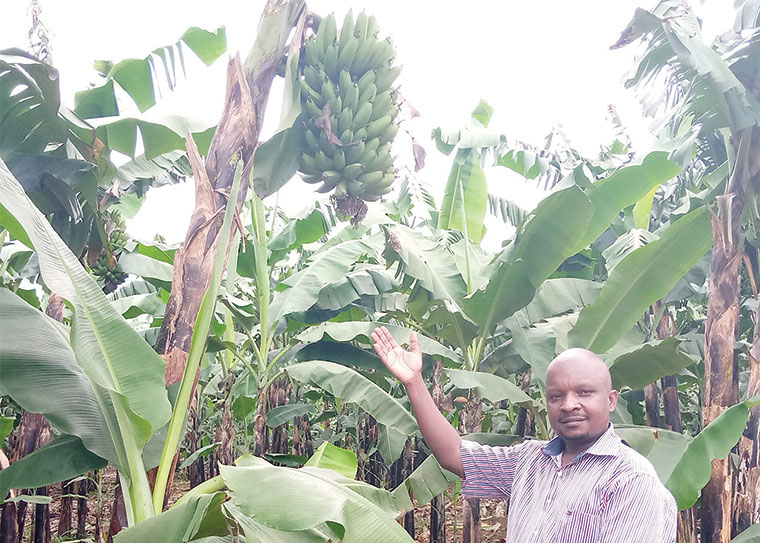

Masaka is endowed with fertile soils and farmers here have capitalised on this opportunity to grow a variety of crops to feed the nation. 
It was because of East African Community a sort of regional cooperation that Uganda was named a food basket.
The Netherands institute of agriculture Learning institutions Hospitals Supermarkets Groceries service providers
You can find more information about Masaka Farmers via @Masakafarmers